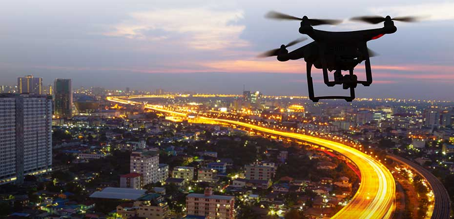

In conclusion, Drones have been a boon for photographers who use UAVs to take expansive aerial photos or come outfitted with LiDAR sensors, which survey landscapes and compile in-depth data that can be used to build 3D models. Drones in Urban planning have greatly improved in capturing data about the local environment and enables landscape architects and planners to examine the existing social and environmental conditions of sites.
Drones are ideal for capturing high-quality aerial photography and video and collecting large amounts of image data.This investigation displayes that there are increases of drones in urban planning as time goes on.
This technology is most powerfully used as a tool by cities and local governments and design and planning firms to support the citizen engagement process. Combined with traditional community engagement media, UAV imagery helps bridge the gap between timeless, two-dimensional satellite imagery and banal conventional ground cameras.
| Home |